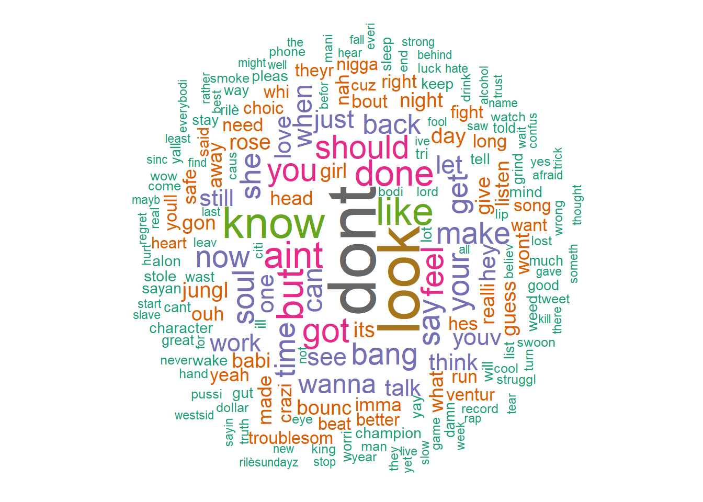

Since I’m fan of Riles and his songs, I came with an idea to better understand his lyrics which is collecting data (songs’ names, lyrics) from this website and analysing them using word cloud.
Word clouds are used to visualize language and word frequency. A word cloud will use size, color, and position to accent words that are more frequent in a given text. They are a qualitative visualization that can be produced from text analysis.
Rilès Kacimi , born 4 January 1996, better known by his stage name Rilès, is a French rapper, songwriter, composer and record producer from Rouen.
All his songs are written in English, thanks to his advanced level in this language after studuing English literature at the University of Rouen.
Riles
I created a variable length that containes the number of words per song and I ploted it:
plot_ly(
x = db$songs,
y = db$length,
name = "Length per song",
type = "bar"
)%>%
layout(title = "Number of words per song",
xaxis = list(title = "song"),
yaxis = list(title = "Number of words"))You can also see rhe words frequency here :
texts <- db$lyrics
corpus <- Corpus(VectorSource(texts))
corpus <- tm_map(corpus, PlainTextDocument)
corpus <- tm_map(corpus, removePunctuation)
corpus <- tm_map(corpus, removeWords, stopwords('english'))
corpus <- tm_map(corpus, stemDocument)
corpus <- tm_map(corpus, removeWords, c("and", "this", "there"))
corpus <- Corpus(VectorSource(corpus))
dtm <- TermDocumentMatrix(corpus)
m <- as.matrix(dtm)
v <- sort(rowSums(m),decreasing=TRUE)
d <- data.frame(word = names(v),freq=v)
d <- d[-which(d$word %in% c("and","this","that","fuck","shit")),]
datatable(d,class='compact',options = list(
initComplete = JS(
"function(settings, json) {",
"$(this.api().table().header()).css({'background-color': '#000', 'color': '#fff'});",
"}")
))set.seed(1234)wordcloud(words = d$word, freq = d$freq, min.freq = 1,
max.words=200, random.order=FALSE, rot.per=0.35,
colors=brewer.pal(8, "Dark2"))